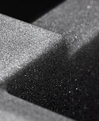
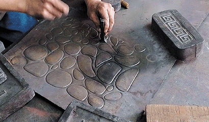
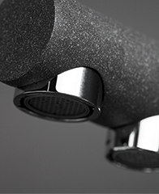

Производство OMOIKIRI
Продукция выпускается в Японии, в промышленной зоне города Фукуока. Добыча гранита происходит в западной части острова Кюсю. Нержавеющая сталь, латунь и медь закупаетсяу NisshinSteel Co., Ltd и других производителей. На производстве задействованы более 60 специалистов. Годовой объем выпуска эксклюзивной продукции класса люкс составляет 23 000 кухонных моек и до 30 000 смесителей.
- 
- 
- 
Контроль качества OMOIKIRI
Продукция и производственный процесс торговой марки OMOIKIRI соответствует европейским, японским и российским стандартам менеджмента качества (ISO 9001, TUV CERT, CE, KS, JIS).
Дизайн OMOIKIRI
Дизайн OMOIKIRI отражает вековую историю и культуру целого народа. В нем соединились японские история и традиции, архитектура и природа, изящество и простота. При создании моек и смесителей, сотни вариантов дизайна были разработаны и проанализированы, в результате чего лучшие из них были отобраны. Кухонные мойки OMOIKIRI отражают изящество водоемов японских садов, равновесие и совершенство пропорций. Кухонные смесители OMOIKIRI подчеркивают красоту и силу водной стихии. плавность и текучесть форм сочетается с силой и мощью морей и рек страны восходящего солнца.
Высококачественные материалы OMOIKIRI
Продукция OMOIKIRI изготавливается из гранита, нержавеющей стали, меди и латуни. Все материалы проходят термическую обработку, устраняющую вредные для здоровья человека оксиды тяжелых металлов.